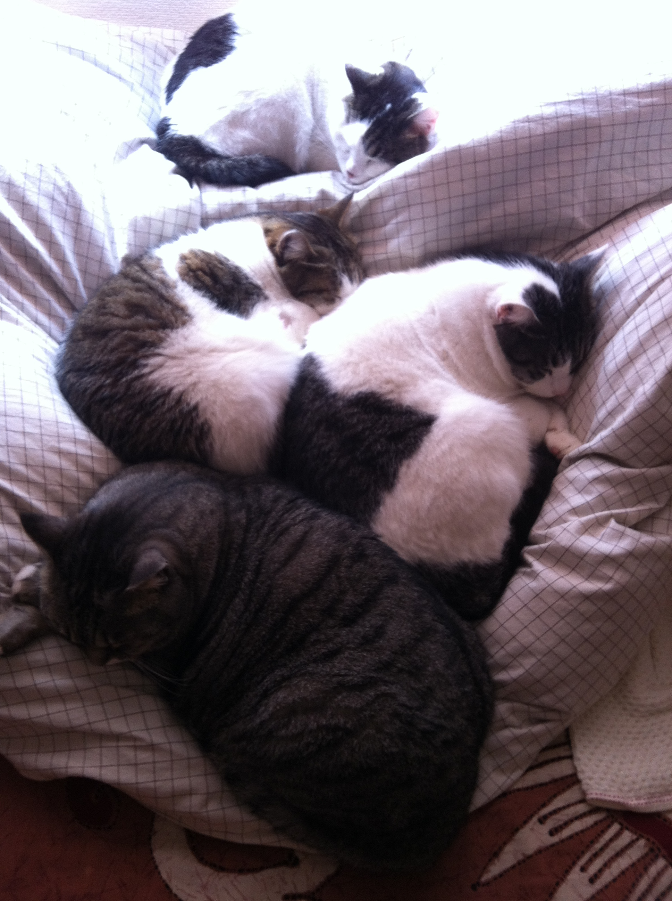
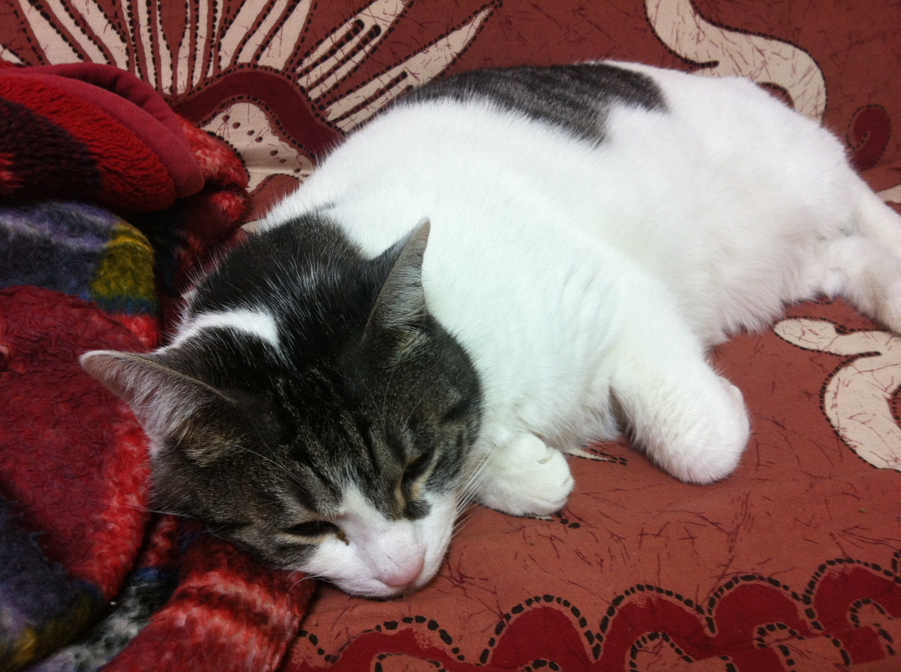

猫の里親募集
ギークハウス浅草で飼われていた猫のうちの一匹の里親を募集しています。
里親見つかりました！！！
経緯

ギークハウス浅草では4匹の猫を飼っていました。
ところが平成24年1月末でギークハウス浅草が解散した折に、誰も猫を飼える環境がないので私が4匹とも引き取りました。
とはいえ、4匹いっぺんにお世話するのは一人暮らしのわたしには大変なので、そのうちの一匹（ディオ）はギークハウス高円寺にもらわれていきました。
そして、さらに3匹のうち一匹（みそら）が一時期うちから出てしまい、しばらくの間放浪生活をしていたため、うちには2匹の猫（みさき、ミギー）が住んでいました。
最近、みそらを近所で見つけて無事みそらを保護することができたのですが、みそらがしばらく外で生活していたせいか他の2匹にとってはみそらはよそ者として扱われて、特にみさきとは大変仲が悪くなってしまいました。
もともと2匹くらいがちょうどよかったので、みそらをどこか可愛がってもらえるところで引き取ってもらえないかなーって思ってます。
みそらについて
- 性別
- ♂おとこのこ
- 年齢
- 6歳くらい
- 性格
- とても人懐っこいです。あまり動じることのない、ずうずうしい性格なので他の猫とは折り合いがよくないですが、飼いやすい性格とも言えます。
家に帰るとまっさきに玄関にやってきて、甘えてきます。基本的に寂しがり屋さんです。
- 写真
- 
連絡先
興味のある方はyouchan01@gmail.comまたはfacebookまで連絡ください。